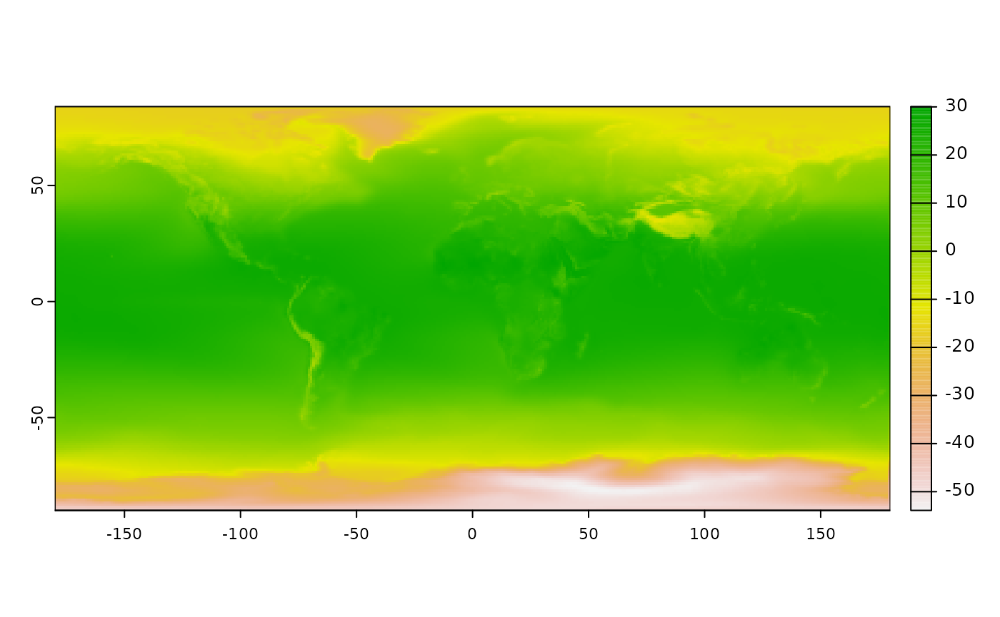

Formatting a custom dataset for pastclim
This guide is aimed at formatting data in such a way that they can be
used with pastclim. pastclim is designed to
extract data from netcdf files, a format commonly used for
storing climate reconstructions. netcdf files have a number
of advantages, as they can store compressed information, as well as
allowing access to only the data required (e.g. extracting only the time
steps or location of interest without reading all the data in memory).
The expected format for pastclim requires that all time
steps of a given variable be stored within a single netcdf file. How
variables are combined (or not) is then flexible: you can have a
separate file for each variable, collate everything within a single
file, or create multiple files each including a number of variables. The
time variable should be in years since 1950 (i.e. with negative integers
indicating the past). There are a number of command line tools as well
as R libraries (e.g. cdo, gdal,
terra) that can help creating and editing netcdf files.
An example: the Trace21k-CHELSEA
Here we provide a simple example of how to format such a dataset in
R. We will use a version of the Trace21k dataset, downscaled to 30
arcsecs using the CHELSEA algorithm(available from this website).
The data are stored as geoTIFF files, one file per time step per
variable. First, we need to collate all the files for a given variable
(we will use bio01 as an example) within a single
netcdf file. As the original files are large, we will
illustrate here how do to that for only a few time steps which were
aggregated to 3x3 degrees to keep files sizes small.
We start by translating each geoTIFF into a netcdf file.
The files have the prefix
CHELSA_TraCE21k_bio01_-xxx_V1.0.small.tif,
where xxx is the number of the time step. We will only
use 3 time step for illustrative purposes.
We store all the files in a single directory, and create a
spatRaster from a list of the files in that directory:
tiffs_path <- system.file("extdata/CHELSA_bio01",package="pastclim")
list_of_tiffs <- file.path(tiffs_path,dir(tiffs_path))
bio01 <- terra::rast(list_of_tiffs)NOTE: terra has changed the way it handles time when
reading from netcdf. The dev version of terra can more
easily format netcdf files correctly, but this vignette presents a
number of workarounds needed for the version on CRAN
Now we need to set the time axis of the raster (in this case, reconstructions are every 100 years), and generate some user friendly names to layers in the raster:
Now we save the data as a nc file (we will use the temporary directory)
nc_name <- file.path(tempdir(),"CHELSA_TraCE21k_bio01.nc")
terra::writeCDF(bio01, filename = nc_name, varname = "bio01", overwrite=TRUE)We also need to make sure that the time dimension has units
and is labelled as axis="T", or pastclim will
not be able to read the data properly.
nc_in <- ncdf4::nc_open(nc_name, write=TRUE)
ncdf4::ncatt_put(nc_in,varid="time",
attname = "units",
attval = "years since 1950-01-01 00:00:00.0")
ncdf4::ncatt_put(nc_in,varid="time",
attname = "long_name",
attval = "years BP")
ncdf4::ncatt_put(nc_in, varid="time", attname="axis", attval = "T")
ncdf4::nc_close(nc_in)We can now read in our custom netcdf file with
pastclim.
custom_series <- region_series(bio_variables = "bio01",
dataset = "custom",
path_to_nc = nc_name
)
custom_series
#> class : SpatRasterDataset
#> subdatasets : 1
#> dimensions : 174, 360 (nrow, ncol)
#> nlyr : 3
#> resolution : 1, 1 (x, y)
#> extent : -180.0001, 179.9999, -90.00014, 83.99986 (xmin, xmax, ymin, ymax)
#> coord. ref. : lon/lat WGS 84 (EPSG:4326)
#> source(s) : CHELSA_TraCE21k_bio01.nc
#> names : bio01As expected, there is only one variable (“bio01”) and 3 time steps (nlyr). We can get the times of those time steps with:
get_time_steps(dataset="custom", path_to_nc = nc_name)
#> [1] 0 -100 -200And we can slice the series and plot a give time point:
climate_100<-slice_region_series(custom_series, time_bp = -100)
terra::plot(climate_100)
Note that these reconstructions include the ocean and the ice sheets, and it would be much better to remove them as they are not needed for most ecological/archaeological studies (and it allows for smaller files).
Making the data available to others
Once you have created suitably formatted netcdf files that can be
used as custom datasets in pastclim, you can add those data
officially to the package, and thus make them available to others. Here
are the necessary steps:
Put your files in a freely available repository.
Update the table used by
pastclimto store information about available datasets. This table is found in “./inst/extdata/variable_table.csv”.
head(read.csv(system.file("extdata/dataset_list_included.csv",
package="pastclim")), n=2)
#> variable ncvar dataset monthly file_name download_path
#> 1 bio01 BIO1 Example FALSE example_climate_v1.2.3.nc
#> 2 bio10 BIO10 Example FALSE example_climate_v1.2.3.nc
#> file_name_orig download_path_orig version long_name
#> 1 1.2.3 annual mean temperature
#> 2 1.2.3 mean temperature of warmest quarter
#> abbreviated_name time_frame units units_exp dataset_list_v
#> 1 ann. mean T year degrees Celsius *degree*C* 1.2.3
#> 2 mean T of warmest qtr year degrees Celsius *degree*C*This includes the following fields:
variable: the variable name used by
pastclim
ncvar: the variable name within the nc file (it
can be the same as variable)
dataset: the name of the dataset.
monthly: boolean on whether the variable is monthly.
file_name: the name of the file for that variable.
download_path: the URL to download the file.
file_name_orig: the name of the original file(s) used to
create the nc dataset.
download_path_orig: the path of those original
files.
version: the version of the dataset that you created
long_name: the long name for the variable
abbreviated_name: an abbreviated version of
long_name (used for plot labels)
time_frame: either year or the appropriate
month
units: units for the variable, to be displayed in a
plain text table
units_exp: units formatted to be included in
expression when creating plot labels
Once you have added lines detailing the variables in your dataset, run the script “./raw-data/dataset_list_included.R” to store that information into the appropriate dataset in
pastclim.Provide information on the new dataset in the file “./R/dataset_docs”, using
roxygen2syntax. Make sure that you provide an appropriate reference for the original data, as it is important that users can refer back to the original source.Make a Pull Request on GitHub.